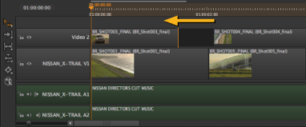

单击并将编辑点拖动到新位置，然后释放鼠标以完成修剪。
提示: 使用 波纹编辑 工具，按激活 R 两次，自动纹波下游跟踪项目。
查看器显示新的输入点或输出点 (取决于您正在调整跟踪项目的开始点或结束点)，允许您准确测量新的输出。
注意: 同时修剪多个轨迹项目以相同的数量和方向修剪每个项目。
或者，单击编辑点并使用 Ctrl / Cmd ßà 键或保持 转变 要轻推的 帧增量 设置在查看器下。

通过持有 Ctrl/Cmd 拖动编辑，您可以将空白帧添加到跟踪项手柄的末端。为清晰起见，空白帧在时间线上标为红色:

| 1。 | 在电子表格视图中选择所需事件。 |
| 2. | 单击齿轮图标并选择所需的 时间编辑行为 根据您使用的是输入点还是输出点或持续时间: |
|
修改 |
使用 |
结果 |
|
Src 在 |
修剪在 |
修剪事件的 Src 在 , Dst In ,和 持续时间 同时保持速度。 在 2 秒之前和之后 Src 在 增加:
|
|
Src Out |
修剪 |
修剪事件的 Src Out , Dst Out ,和 持续时间 同时保持速度。 在 2 秒之前和之后 Src Out 增加:
|
|
Src Dur |
修剪 |
修剪事件的 Src Dur , Dst Dur ,和 Src / Dst Out 同时保持速度。 50 帧之前和之后 Src Dur 增加:
|
|
Dst In |
修剪在 |
修剪事件的 Dst In , Src 在 ,和 持续时间 同时保持速度。 在 2 秒之前和之后 Dst In 增加:
|
|
Dst Out |
修剪 |
修剪事件的 Dst Out , Src Out ,和 持续时间 同时保持速度。 在 2 秒之前和之后 Dst Out 增加:
|
|
Dst Dur |
修剪 |
修剪事件的 Dst Dur , Src Dur ,和 Dst / Src Out 同时保持速度。 50 帧之前和之后 Dst Dur 增加:
|
| 3. | 根据需要调整值，以按指定的量修剪轨迹项目。 |